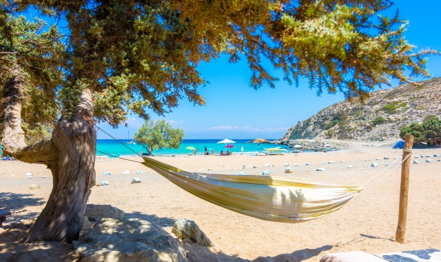
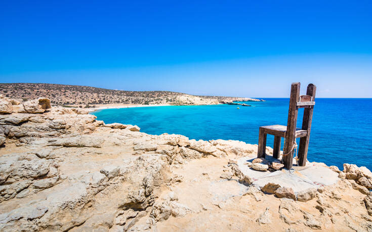

Gavdos Beach Guide
-
Sarakiniko Beach
Sandy and beautiful, it is the most popular beach in Gavdos island. Non-organized located 2 km from Karabe port. Go by bus or on foot. Campers area providing basic facilities nearby.
-
Agios Ioannis Beach

Sandy, non-organized, located 4 km from Sarakiniko Beach. One-hour hike from Sarakiniko. You can go by bus as well. African-style beach ranked as second-most beautiful beach in the world by the Discovery Channel.
-
Lavrakas Beach

Secluded beach on the northern coast of Gavdos, located 2 km from Agios Ioannis. About 30 min. walk from Agios Ioannis on foot. You can go most of the way by bus from the port, but Lavrakas beach itself can only be accessed pm foot. Archaeologists have found several Minoan caves and remains of ancient constructions in the area around Lavrakas Beach.
-
Tripiti Beach
The spectacular rock formations have given this spectacular beach its name. Unique arches rise from the sea. Tripa in Greek means “hole”, and you can see three arches at the end of the formation. The landmark of Gavdos is a giant chair standing on the top of the Tripiti formation. The chair is with its inscription “southernmost point of Europe” a favourite spot for tourists. All have a picture taken with their feet dangling from the edge of the continent.